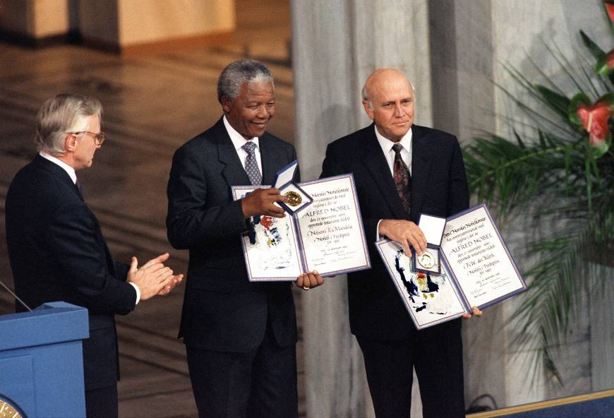

Nobel :

Nelson Mandela nasce come uno spirito libero e dalla prima giovinezza si batte contro le imposizioni. Già quando gli vogliono far sposare una ragazza per comando della famiglia, come vuole la tradizione, egli si ribella e non accetta. Sempre da giovane entra nell’opposizione al regime sudafricano in un partito che ha la finalità di sconfiggere il predominio bianco a favore di una giusta ricollocazione del popolo nero. L’Apartheid ha infatti segregato i neri a popolo succube delle scelte dei bianchi.
E’ merito di Nelson Mandela se buona parte dell’Apartheid è stata sconfitta rendendo il Sud Africa un paese più libero. Nonostante la sua lunga prigione durata ben ventisette anni, Mandela è riuscito anche da dentro il carcere un messaggio di ribellione che però virasse sula pace dei popoli e la cultura piuttosto che sulla repressione e la violenza imperante nella sua terra.
Mandela ha vinto il Premio Nobel per la pace nel 1993 insieme al suo predecessore Frederik Willem de Klerk..